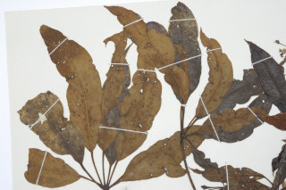
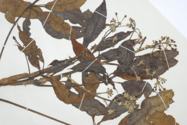
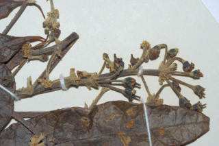
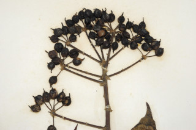
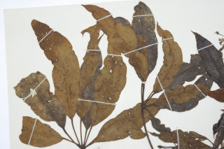
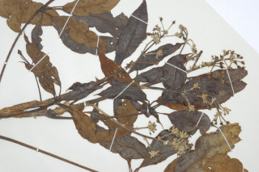
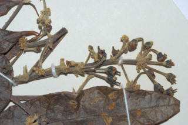
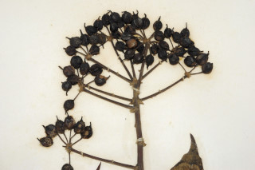

Images :
 







| Habit : | Trees , 8-12 m high, sometimes strangler on trees or rocks. |
| Leaves : | Leaves compound , digitate , alternate , spiral , pulvinate ; rachis 10-20 cm long, stipule adnate to the petiole ; petiolule 0.5-2.5 cm long, both rusty pubescent when young; leaflets 7-11, lamina 5-12 x 3-8 cm, oblong-lanceolate , apex acute , base rounded , rusty pubescent when young; matured one glabrous , coriaceous ; secondary_nerves 8-10 pairs; tertiary_nerves reticulate . |
| Inflorescence / Flower : | Inflorescence terminal ; umbels 2-2.5 cm diameter, arranged in racemes . |
| Fruit and Seed : | Drupe ; seeds compressed. |